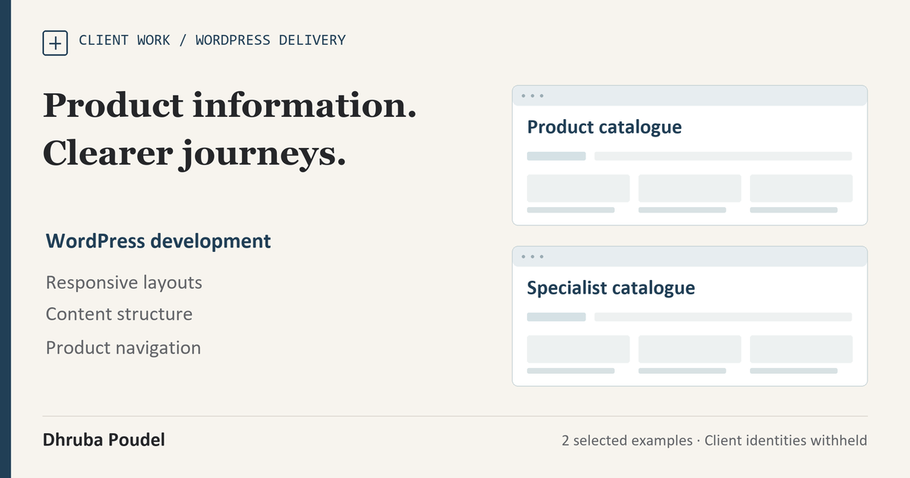

Client work · Two selected website deliveries
Commercial Product Websites
Two audiences, connected to useful product information and a clear next step.
- Contribution
- Design and development across a corporate site and a specialist catalogue.
- Engineering focus
- Product discovery, responsive content and enquiry entry points.
- Evidence
- Public-page review dated 26 October 2026; transaction checks separate.

Give specialist product information a useful structure.
I designed and developed two related commercial websites for a specialist-products business. One introduces the corporate offer and broad product range; the other gives a focused audience a dedicated catalogue and enquiry path.
The challenge was information structure as much as presentation: visitors need to connect their requirement with the right product family, detail and next action. The client identity and direct domains are withheld in this case.
Combine WordPress foundations with a coherent web experience.
My contribution covered website design, content structure, WordPress implementation, responsive layouts and the public product-discovery experience. The public builds use established theme and plugin foundations. Those products retain their original authorship; my contribution is the design and development of the websites built around them.
Keep two audiences clear without duplicating confusion.
The corporate experience provides context and broad navigation. The specialist catalogue supports a more focused discovery task. I treated the relationship between the experiences, content grouping and enquiry entry points as part of the delivery.
The diagram above is a new generic illustration of that contribution. It deliberately replaces identifiable homepages, product photographs, logos and exact copy from the client websites.
Two selected website deliveries, with a defined scope.
- My contribution
- Website design and development of both sites, confirmed by my account of the work.
- Public review
- The homepages and visible product areas were reviewed on 26 October 2026. Client identifiers are withheld from this publication.
- Delivery count
- Two websites in this paired case. This is a selected example, not a total of my commercial web work.
- Transactional checks
- The portfolio review did not submit quotes, orders or payments. Those operational paths have separate acceptance requirements.
Outcome scope
This case establishes the design and development contribution and the public website examples. It does not establish conversion uplift, revenue growth or a measured performance improvement.
Keep the case useful without identifying the customer.
Brand assets, direct links, operational records and source code are withheld. The case retains the important technical and delivery decisions: platform foundations, content structure, responsive implementation and the distinction between public content and downstream enquiry processing.
Original delivery dates, ongoing maintenance responsibilities and commercial measurements remain separate facts to confirm.